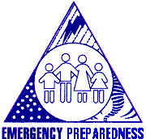
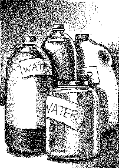
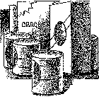
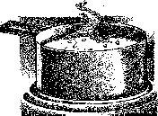
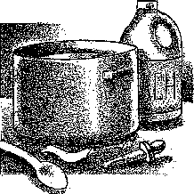
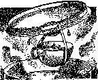

American Red Cross
American Red Cross Federal Emergency Management Agency
Federal Emergency Management Agency
Food and Water in an Emergency American Red Cross Federal Emergency Management Agency
Reprinted by Permission of the American Red Cross (1997)
If an earthquake, hurricane, winter storm or other disaster strikes your community, you might not have access to food, water and electricity for days, or even weeks. By taking some time now to store emergency food and water supplies, you can provide for your entire family.

This brochure was developed by the Federal Emergency Management Agency in cooperation with the American Red Cross and the U.S. Department of agriculture.Having an ample supply of clean water is a top priority in an emergency. A normally active person needs to drink at least two quarts of water each day. Hot environments can double that amount. Children, nursing mothers and ill people will need even more. You will also need water for food preparation and hygiene. Store a total of at least one gallon per person, per day. You should store at least a two-week supply of water for each member of your family.
If supplies run low, never ration water. Drink the amount you need today, and try to find more for tomorrow. You can minimize the amount of water your body needs by reducing activity and staying cool.
If a disaster catches you without a stored supply of clean water, you can use the water in your hot-water tank, pipes and ice cubes. As a last resort, you can use water in the reservoir tank of your toilet (not the bowl).
Do you know the location of your incoming water valve? You'll need to shut it off to stop contaminated water from entering your home if you hear reports of broken water or sewage lines.
To use the water in your pipes, let air into the plumbing by turning on the faucet in your house at the highest level. A small amount of water will trickle out. Then obtain water from the lowest faucet in the house.
To use the water in your hot-water tank, be sure the electricity or gas is off, and open the drain at the bottom of the tank. Start the water flowing by turning off the water intake valve and turning on a hot-water faucet. Do not turn on the gas or electricity when the tank is empty.
If activity is reduced, healthy people can survivor on half their usual food intake for an extended period and without any food for many days. Food, unlike water, may be rationed safely, except for children and pregnant women.

If your water supply is limited, try to avoid foods that are high in fat and protein, and don't stock salty foods, since they will make you thirsty. Try to eat salt-free crackers, whole grain cereals and canned foods with high liquid content.
You don't need to go out and buy unfamiliar foods to prepare an emergency food supply. You can use the canned foods, dry mixes, and other staples on your cupboard shelves. In fact, familiar foods are important. They can life morale and give a feeling of security in time of stress. Also, canned foods won't require cooking, water or special preparation. Following are recommended short-term food storage plans.
As you stock food, take into account your family's unique needs and tastes. Try to include foods that they will enjoy and that are also high in calories and nutrition. Foods that require no refrigeration, preparation or cooking are best.
Individuals with special diets and allergies will need particular attention, as will babies, toddlers and elderly people. Nursing mothers may need liquid formula, in case they are unable to nurse. Canned dietetic foods, juices and soups may be helpful for ill or elderly people.
Make sure you have a manual can opener and disposable utensils. And don't forget nonperishable foods for your pets.
For emergency cooking you can use a fireplace, or a charcoal grill or camp stove can be used outdoors. You can also heat food with candle warmers, chafing dishes and fondue pots. Canned food can be eaten right out of the can. If you heat it in the can, be sure to open the can and remove the label first.
In addition to having a bad odor and taste, contaminated water can contain microorganisms that cause diseases such as dysentery, typhoid and hepatitis. You should purify all water of uncertain purity before using it for drinking, food preparation or hygiene.
There are many ways to purify water. None is perfect. Often the best solution is a combination of methods.
Two easy purification methods are outlined below. These measures will kill most microbes but will not remove other contaminants such as heavy metals, salts and most other chemicals. Before purifying, let any suspended particles settle to the bottom, or strain them through layers of paper towel or clean cloth.

BOILING
Boiling is the safest method of purifying water. Bring water to a rolling boil for 3-5 minutes, keeping in mind that some water will evaporate. Let the water cool before drinking.
Boiled water will taste better if you put oxygen back into it by pouring the water back and forth between two clean containers. This will also improve the taste of stored water.
DISINFECTION
You can use household liquid bleach to kill microorganisms. Use only regular household liquid bleach that contains 5.25 percent sodium hypochlorite. Do not use scented bleaches, colorsafe bleaches or bleaches with added cleaners.

Add 16 drops of bleach per gallon of water, stir and let stand for 30 minutes. If the water does not have a slight bleach odor, repeat the dosage and let stand another 15 minutes.
The only agent used to purify water should be household liquid bleach. Other chemicals, such as iodine or water treatment products sold in camping or surplus stores that do not contain 5.25 percent sodium hypochlorite as the only active ingredient, are not recommended and should not be used.
While the two methods described above will kill most microbes in water, distillation will remove microbes that resist these methods, and heavy metals, salts and most other chemicals.

DISTILLATIONDistillation involves boiling water and then collecting the vapor that condenses back to water. The condensed vapor will not include salt and other impurities. To distill, fill a pot halfway with water. Tie a cup to the handle on the pot's lid so that the cup will hang right-side-up when the lid is upside-down (make sure the cup is not dangling into the water) and boil the water for 20 minutes. The water that drips from the lid into the cup is distilled.
It's 2:00 a.m. and a flash flood forces you to evacuate your home - fast. There's no time to gather food from the kitchen, fill bottles with water, grab a first-aid kit from the closet and snatch a flashlight and a portable radio from the bedroom. You need to have these items packed and ready tin one place before disaster strikes.
Pack at least a three-day supply of food and water, and store it in a handy place. Choose foods that are easy to carry, nutritious and ready-to-eat. In addition, pack these emergency items:
FIRST, use perishable food and foods from the refrigerator.
THEN, use the foods from the freezer. To minimize the number of times you open the freezer door, post a list of freezer contents on it. In a well-filled, well-insulated freezer, foods will usually still have ice crystals in their centers (meaning foods are safe to eat) for a least three days.
FINALLY, begin to use non-perishable foods and staples.
Store your water in thoroughly washed plastic, glass, fiberglass or enamel-lined metal containers. Never use a container that has held toxic substances. Plastic containers, such as soft drink bottles, are best. You can also purchase food-grade plastic buckets or drums.
Seal water containers tightly, label them and store in a cool, dark place. Rotate water every six months.
If you need to find water outside your home, you can use these sources. Be sure to purify the water according to the instructions on page 3 before drinking it.
Avoid water with floating material, an odor or dark color. Use saltwater only if you distill it first. You should not drink flood water.
Even though it is unlikely that an emergency would cut off your food supply for two weeks, you should prepare a supply that will last that long.
The easiest way to develop a two-week stockpile is to increase the amount of basic foods you normally keep on your shelves.
During and right after a disaster, it will be vital that you maintain your strength. So remember:
Here are some general guidelines for rotating common emergency foods.
If you are interested in learning more about how to prepare for emergencies, contact your local or State Office of Emergency management or local American Red Cross chapter, or write to:
FEMA
P.O. Box 2012
Jessup, MD 20794-2012
and ask for any of the following publications:
ARC-5055
FEMA L210
November 1994